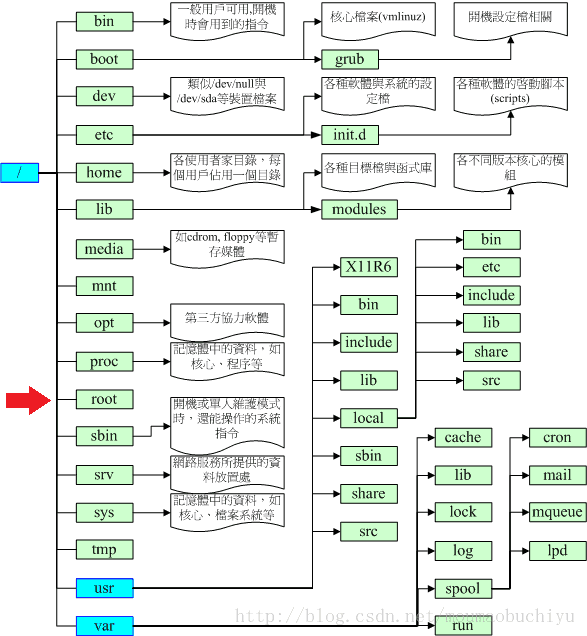

图解

环境变量配置
OS系统的配置文件加载顺序：
- /etc/profile
- /etc/paths
- ~/.bash_profile
/etc/profile、/etc/bashrc 是针对系统所有用户的 全局变量, 如修改需权限,~/.bash_profile 是当前 用户级 的环境变量, 所以通常去修改它来设置环境变量.
操作步骤:
|
注: 删除环境变量需重启shell才能立即生效
开发相关文件
- 应用程序(Applications)
- 系统(System)
- 用户(User)
- 资料库(Library)
隐藏文件夹
| 文件夹 | 作用 |
|---|---|
| usr | unix 使用者专用文件夹 |
| bin | unix 储存基本指令 |
| sbin | unix 储存系统指令 |
| etc | 系统设定 储存位置 |
| var | 频繁改动 置放于此, 如监控、日志等 |
| tmp | 系统暂存档 |
usr/local | 本地文件系统配置相关文件 |
usr/local/etc | 相关配置文件 |
其他
| 文件夹 | 作用 |
|---|---|
/ | 磁盘根目录 也就是 Macintosh HD 目录下 |
~ 或者 /User/ | 当前用户目录的顶级目录 |
| /user/Shared | 目录可以被本地的所有用户访问 |
| Sites | 用户个人站点网页文件。需设置 “系统预置->共享->Web共享” 中打开共享 |
| Public | 可以把需要与其它用户共享的文件放在这个目录中 |